標準クライアントやサーバーソフトウェアを使用するためには、
それぞれの言語が使用できる環境が必要になります。
この節では、C言語の環境を構築する方法を説明します。
このマニュアルを執筆している段階で、
C言語版の動作確認がとれているOSは以下の通りです。
- Solaris
- FreeBSD
- Linux系のOS
- Cygwin をインストールした Windows 環境
Windowsの動作するパソコンをお持ちでしたら、Cygwin をインストールして開発するのがおすすめです。Cygwin とは、Windows 環境上に Linux 互換環境を構築するソフトウェアで、導入すれば Linux と同等の開発環境を実現できます。使い慣れた環境でクライアント・プログラムを改良することができるので、特に理由がなければ Cygwin をつかった開発を行なった方が良いでしょう。
Linux 上で開発したい場合は、knoppix を使うのがいいでしょう。knoppix は 1CD Linuxといわれる Linux の一種で、CD-ROM や DVD からパソコンを起動することで、パソコンの中のデータなどを壊すこと無く使用できるものです。
なお、knoppix を使って開発する場合は気をつけていただきたい点があります。knoppix には CD版と DVD版がありますが、開発環境の都合上 DVD版を使います。
お使いのパソコンで DVD を書き込めない場合はご連絡ください。連絡先は 
 です。CD 版で動作させるために必要なファイルと使用方法を説明をさせていただきます。
です。CD 版で動作させるために必要なファイルと使用方法を説明をさせていただきます。
このマニュアルでは、Cygwinを使った開発方法と、knoppixを使った開発方法の両方を説明します。好みに応じて開発環境を選択してください。
まず、CygwinをインストールしたWindows環境で開発する方法を解説します。
なにはともあれ、Cygwinを導入しないことには始まりません。まずはCygwinのインストールからはじめましょう。すでに導入済みの場合はこの節は読み飛ばしても結構です。
まずはCygwinのインストーラをダウンロードしましょう。
ブラウザを起動し、Cygwin の web サイト[www.cygwin.com/] にアクセスしてください。
図5.1の web ページが表示されますので、"Install or update now!" というリンクをクリックしてインストーラをダウンロードしましょう。
図中の赤いカコミ部分です。
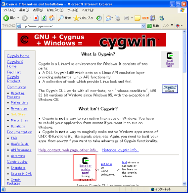
図5.1 ： Cygwin 公式 web サイトから、インストーラをダウンロードしてください
（画像をクリックで大きい図）
ダウンロード先はどこでも良いですが、とりあえずデスクトップに保存しておけばよいでしょう。ダウンロードが完了したら図5.2のようなアイコンが表示されるので、ダブルクリックして起動しましょう。
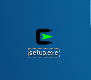
図5.2 ： インストーラのダウンロードが完了したら、このアイコンをダブルクリックして起動しましょう
インストーラが起動するといろいろ設定が可能ですが、特に設定を変更する必要はありません。図5.3のようなウインドウが表示されたら、URLが.jpで終わっているサイトを選択して「次へ」のボタンをクリックしてください。
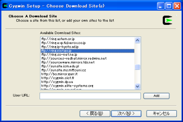
図5.3 ： ダウンロードしてくるサイトを選択します。URL が .jp で終わっているサイトが良いでしょう。
（画像をクリックで大きい図）
インストールを進めていくと、図5.4のようなウインドウが表示されます。図中の赤いカコミ部分を一度クリックすると、表示が「Install」に変わります。図のような表示になったら、「次へ」ボタンをクリックしてインストールを進めましょう。
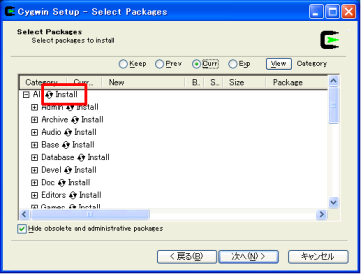
図5.4 ： インストールパッケージの選択画面
（画像をクリックで大きい図）
<注意> この手順に従うと、必ずしも必要でないパッケージも導入されます。Cygwinについて良く知っている方は必要でない物を省いてしまっても問題ありません。ただし、DevelとX11は必ずインストールしてください。よく分からないときは上の手順通りに進めてください。
インストーラの指示に従ってインストールを進めていくと、図5.5のようなウインドウが表示されます。この画面はインターネットから必要なファイルをダウンロードし、インストールしていることを意味します。しばらく時間がかかるので、ゆっくりと待ってください。これからの開発にそなえてコーヒーを用意するのもいいアイデアです。
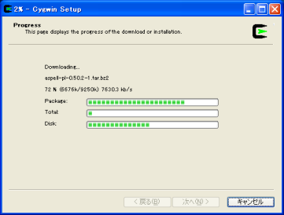
図5.5 ： インストール中の画面
（画像をクリックで大きい図）
図5.6 の画面が表示されたらインストールは完了です。お疲れ様でした!
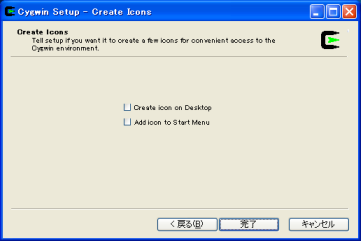
図5.5 ： インストール完了画面。この画面になったら、インストール終了です。
（画像をクリックで大きい図）
UECコンピュータ大貧民大会のWeb サイト[uecda.nishino-lab.jp] にアクセスし、「ダウンロードページ」のリンクをクリックしてください。開発キットの最新版へのリンクをクリックすると、クライアント・プログラムの開発や動作確認に必要なファイル一式がダウンロードできます（図5.6 参照）。
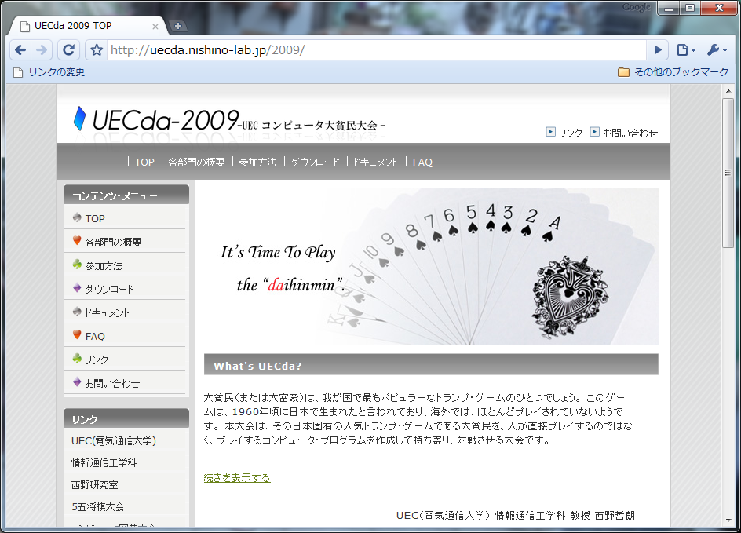
図5.6 ： UECコンピュータ大貧民大会のサイトから、開発キットをダウンロードしましょう。
（画像をクリックで大きい図）
開発キットは.tar.gz 形式で圧縮されています。Windows の圧縮解凍ソフトで解凍することができますので、好きなソフトで解凍を行ってください。もしお使いの解凍ソフトが.tar.gz 形式に対応していない場合はLhaForge やLhaplus をインストールしましょう。検索エンジンで検索をかければ配布元のサイトを探すことができます。
配布キットを解凍してできたフォルダを開くと、daihinmin というフォルダがあります。このフォルダを右クリックして、「コピー」を選択してください。「マイコンピュータ」を開き、「ローカルディスク(C:)」→「cygwin」→「home」という順でフォルダを開くと、「home」の中にユーザ名のフォルダがあるはずです。大抵はAdministratorだとおもいますが、環境によっては違うかもしれません。とにかく、自分のユーザ名のフォルダを開き、図5.7 のように、先ほどコピーしたファイルを貼り付けましょう。
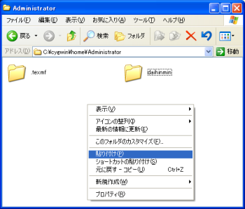
図5.7 ： ファイルをコピーして下さい。
（画像をクリックで大きい図）
これで準備は完了です。実際に開発を行う方法は第6章『クライアントの改良、コンパイル、実行（C言語版）』や第10章『クライアントの改良、コンパイル、実行（JAVA版）』を参照してください。
参加者が必ず用意しなくてはいけないものは以下の通りです。
- DVD-Rのメディアを1枚（100円あれば充分買えます）
- 64MB以上のUSBメモリ（2000円くらいで買えます）
- コンピュータ（普通のPCで大丈夫です。これをみているあなたはもう持っているはずです）
- インターネット接続環境（このマニュアルをみているならもう持っているはずです）
必要なソフトウェアなどはすべて knoppix に含まれていますので、これ以外に用意してもらうものはありません。
いよいよクライアントソフトウェアを開発するための準備を始めます。DVD-R のメディア1枚と、USBメモリは用意ができましたか？。準備 OK なら早速始めましょう！。
knoppixのダウンロード
まずは knoppix をダウンロードしましょう。いま使っているパソコンのブラウザ（Internet Exproler や Firefox など）を起動し、KNOPPIX Japanese edition[unit.aist.go.jp] にアクセスしましょう（図5.8参照）。
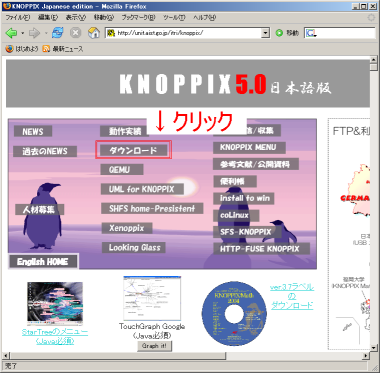
図5.8 ： KNOPPIX の配布サイト。ダウンロードをクリックして下さい。
（画像をクリックで大きい図）
表記はCDですがとりあえず気にせず、CD[iso 版] というアイコンをクリックしてください（図5.9 参照）。
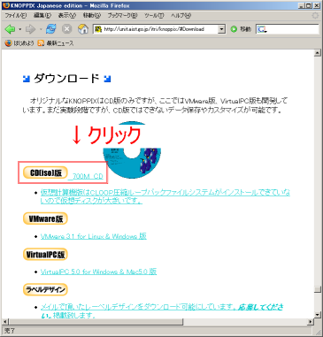
図5.9 ： CD[iso 版] をクリックすると別のページにジャンプします。
（画像をクリックで大きい図）
ダウンロードするサイトを選択するページにジャンプしますので、「最新ダウンロードサイト」のリンクをクリックしてください（図5.10 参照）。
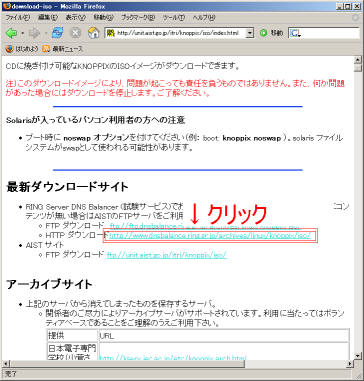
図5.10 ： 「最新ダウンロードサイト」以下に書いてあるリンクならどれでも大丈夫
です
（画像をクリックで大きい図）
するといろいろなファイルが表示されますので、knoppix v5.0.1DVD （以下略） というファイルで、名前の末尾が .iso になっているものをクリックしてください。knoppix のダウンロードが始まります（図5.11 参照）。
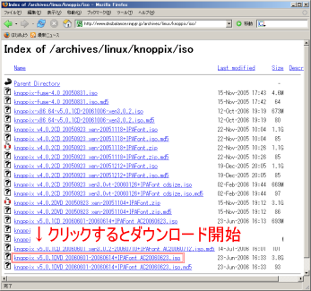
図5.11 ： knoppix v5.0.1DVD （以下略）というフィルをダウンロードして下さい
です
（画像をクリックで大きい図）
ダウンロードが完了したら、ダウンロード先に指定したフォルダに新しいファイルができているはずです。このファイルを、あらかじめ用意しておいたDVD-R に書き込めば knoppix の準備は完了です（図5.12 参照）。
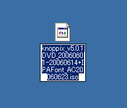
図5.12 ： DVDイメージを、DVD-R に書き込んで下さい
です
開発キットの準備
UECコンピュータ大貧民大会の web サイト[uecda.nishino-lab.jp]にアクセスして、クライアントソフトウェア開発キットをダウンロードしてください（図5.13参照）。
図5.13 ： UECコンピュータ大貧民大会のサイトから、開発キットをダウンロードしましょう。
（画像をクリックで大きい図）
ダウンロードが完了したらUSBメモリにコピーしておいてください。これで準備は完了です。
knoppixのCDからPCを起動する
PC の電源を入れたらすかさず knoppix の DVD を DVD ドライブに入れてください。もし間に合わなかったら、あらかじめドライブに DVD を入れておき、再起動しても大丈夫です。PC のメーカーによって状況はちがいますが、たいてい DVD-ROM からの起動ができるようになっているはずなので DVD から PC を起動してください。しばらく待つと knoppix が起動するはずです。
knoppix が起動したら、準備しておいた USBメモリを PC に接続しましょう。自動的に認識が行われて、デスクトップ上にアイコンが表示されるはずです。
これで準備は完了です。第6章では実際にクライアントソフトウェアを改良したり、実行する方法を説明します。
{kind=link}
{kind=link}
{kind=link}
{kind=link}
{kind=link}
{kind=link}
{kind=link}
{kind=link}
{kind=link}
{kind=link}
{kind=link}